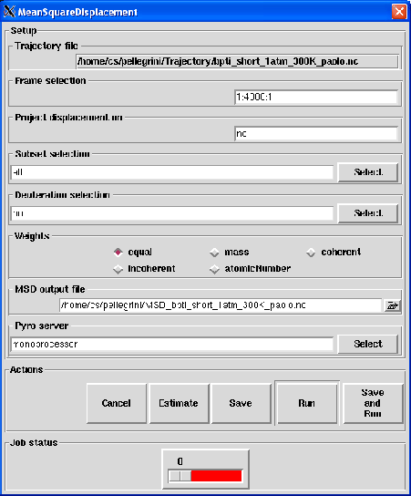

Next: Output
Up: Mean-Square Displacement
Previous: Theory and implementation
Contents
Parameters
Pressing the Mean-Square Displacement button will pop up the dialog shown on figure 4.35
Figure 4.35:
The dialog from where the MSD analysis will be set up and run.
|

|
The following input fields controls the parameters for the MSD analysis:
- Trajectory file
Format: Not an editable entry
Default: traj_file where traj_file is the name of the loaded trajectory
Description: the value of this widget can not be changed. It just recalls for information purpose the name
of the trajectory file loaded for the analysis.
- Frame selection
Format: string
Default: 1:traj_length:1 where traj_length is the number of frames of the trajectory.
Description: this widget allows to select the trajectory frames that will be used for the analysis. This must
be a string of the form:
first:last:step
where first is an integer specifying the first frame number to consider, last is an integer specifying the last
frame number to consider and step is an integer specifying the step number between two frames.
For example,
- 2:10:3 will select the frames 2, 5 and 8.
- 1:5:1 will select the frames 1, 2, 3, 4 and 5.
- Project displacement on
Format: string
Default: no
Description: this widget allows to specify a vector along which the MSD will be computed. This vector does not
need to be normalized as nMOLDYN will perform the normalization when processing it. The entered value must have the
following format:
vx:vy:vz
where vx, vy and vz are floats that represent respectively the x, y and z coordinates of the vector.
- Subset selection
Format: subset selection string
Default: all
Description: this widget allows the selection of a subset of the system for the analysis.
See Section 4.2.2.1 for more details.
- Deuteration selection
Format: deuteration selection string
Default: no
Description: this widget allows the selection of a subset hydrogen atoms that will take the atomic parameters
of deuterium. See Section 4.2.2.2 for more details.
- Weights
Format: string equal to equal, mass, coherent, incoherent or atomicNumber
Default: equal
Description: this widget allows the selection of the weighting scheme to apply on each atomic contribution
to the MSD. See Section 4.2.1 for more details.
- MSD output file
Format: string
Default: MSD_traj_file.nc where traj_file.nc is the name of the input trajectory
Description: this widget allows to enter the name of the NetCDF output file of the MSD analysis. A CDL
version of the NetCDF output file is also automatically created with MSD_traj_file.cdl name.
Next: Output
Up: Mean-Square Displacement
Previous: Theory and implementation
Contents
pellegrini eric
2009-10-06